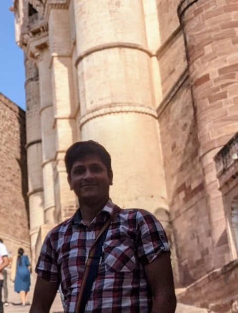
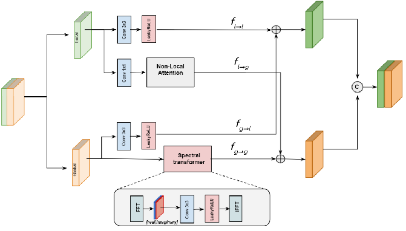
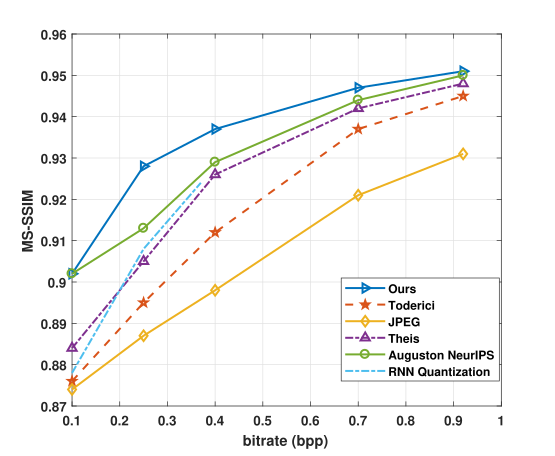
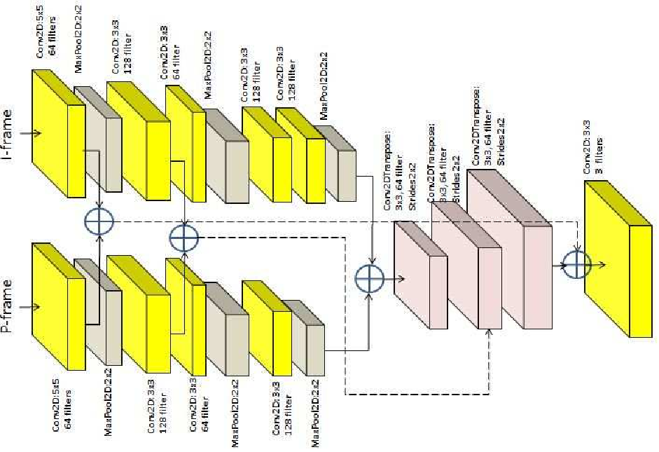
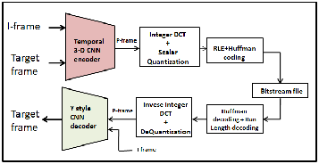

I am currently working as a Scientist in Signal and Image Processing Group
at Space Applications Center (SAC), Ahmedabad. My research interest broadly spans the application of Artificial Intelligence to solve computer vision problems, including
Image and Video Compression and Spatio-spectral Super-Resolution. I am also interested in studying and utilizing the theoretical aspects of Machine Learning to
explain and assess the behaviour of neural networks.
Prior to joining SAC, I graduated with Bachelors in Electronics and Communication Engineering from Indian Institute of Space Science
and Technology, where I was advised by Dr. Deepak Mishra during my undergraduate research in the field of Deep Video Compression.


News
- April 2022: Paper accepted in CVPR 2022 NTIRE Workshop
- April 2022: Paper accepted in CVPR 2022 CLIC Workshop
- May 2021: Paper accepted in IEEE National Conference on Communications ( NCC )
Research

NL-FFC: Non-Local Fast Fourier Convolution for Image Super Resolution
Abhishek Kumar Sinha , S. Manthira Moorthi, and Debajyoti Dhar
2022 IEEE/CVF Conference on Computer Vision and Pattern Recognition Workshops (CVPRW)
IEEE Xplore / OpenAccess

Self-Supervised Variable Rate Image Compression using Visual Attention
Abhishek Kumar Sinha , S. Manthira Moorthi, and Debajyoti Dhar
2022 IEEE/CVF Conference on Computer Vision and Pattern Recognition Workshops (CVPRW)
IEEE Xplore / OpenAccess

Deep Video Compression using Compressed P-Frame Resampling
Abhishek Kumar Sinha and Deepak Mishra
IEEE National Conference on Communications 2021
IEEE Xplore

T3D-Y Codec: A Video Compression Framework using Temporal 3-D CNN Encoder and Y-Style CNN Decoder
Abhishek Kumar Sinha and Deepak Mishra
IEEE International Conference on Communication, Computing, and Networkong Technologies 2020
IEEE Xplore
Academic Services
Conferences Reviewed
- IEEE/CVF CVPR Workshops 2022: New Trends in Image Restoration and Enhancement (NTIRE 2022)
- ICPR Conference on Computer Vision and Image Processing (CVIP) 2021
Journals Reviewed
- IEEE Transactions on Signal Processing